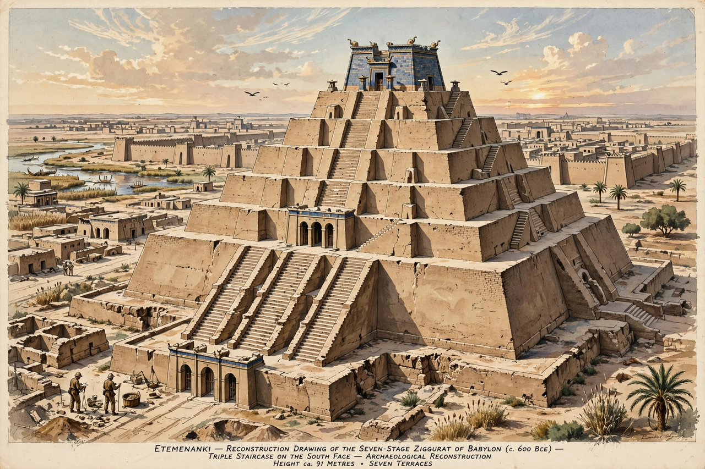

| Location | Babylon, Iraq |
|---|---|
| Type | Ziggurat |
| Dedicated to | Marduk |
| Height | Possibly 91 m (299 ft) |
| Base | Approximately 91 m square |
| Rebuilt by | Nabopolassar and Nebuchadnezzar II |

Etemenanki (Sumerian: É.TEMEN.AN.KI, "house of the foundation of heaven and earth") was the great ziggurat of Babylon, dedicated to the god Marduk. Standing within the temple precinct of Esagila, it was one of the most famous buildings of the ancient world and is widely regarded as the historical structure behind the biblical Tower of Babel.
A ziggurat stood on the site from an early period, but the structure known to history was rebuilt on a monumental scale by the Neo-Babylonian kings Nabopolassar and Nebuchadnezzar II in the late 7th and 6th centuries BCE. Earlier Assyrian rulers, including Esarhaddon, had also undertaken restorations. Inscriptions describe the kings laying its foundations with their own hands and raising its summit "towards heaven".
According to the so-called Esagila tablet, a Hellenistic copy of an older metrological text, Etemenanki rose in seven stages above a square base of about 91 metres per side, to a total height possibly equal to its base — some 91 metres. A triple staircase led up its front, and on the summit stood a shrine covered in blue-glazed brick, sacred to Marduk. Herodotus described a similar great tower at Babylon with eight levels and a spiral ascent.
After Babylon's decline, the ziggurat fell into ruin. Alexander the Great ordered its rubble cleared with a view to rebuilding, but died before the work could proceed. Today only the outline of its foundations survives in the mud-brick platform at the site of Babylon, a square depression that still marks where the tower stood.
See also: Tower of Babel · Nergal